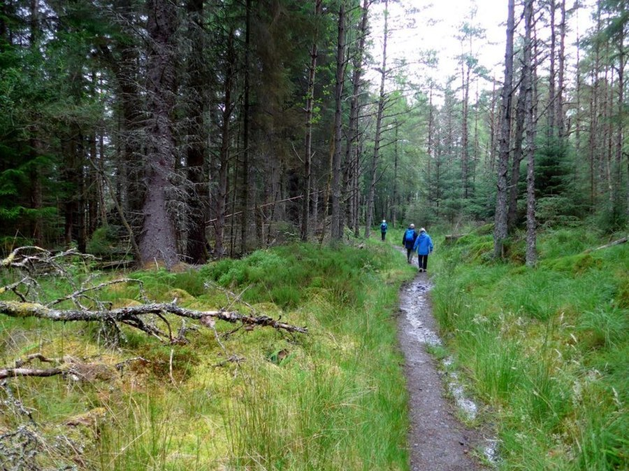

High Altitude and Cognitive Function: Why Thin Air Affects Thinking
Above a certain elevation, the air holds less oxygen, and your brain notices before you do. Here's what altitude does to memory and focus, and how long it takes to bounce back.

Photo: Gordon Brown / Wikimedia Commons / CC BY-SA 2.0
Key takeaways
- Above roughly 8,000 feet (2,400 meters), the air has meaningfully less available oxygen, and that alone can slow reaction time, working memory and decision-making.
- Mild cognitive fog at altitude is common and usually reversible, easing within a day or two of acclimatizing or within hours of descending.
- Acute mountain sickness (AMS) can worsen cognitive symptoms, adding headache, nausea and poor judgment on top of the effects of thinner air alone.
- Sleep quality often drops at altitude too, which compounds the direct effects of lower oxygen on thinking.
- Gradual ascent, hydration and adequate rest are the best-supported ways to protect cognitive performance at elevation, not any supplement or shortcut.
Climb fast enough or fly high enough and thinking gets harder before the headache even starts. That's not in your head, or rather, it is exactly in your head: less oxygen reaches brain tissue at altitude, and the brain is more sensitive to that shortfall than almost any other organ. Pilots train for it. Mountaineers plan entire trips around it. Here's what the research actually shows about how altitude affects memory, focus and decision-making, and what helps.
Why does elevation affect the brain in the first place?
Air pressure drops as you go up, and with it the amount of oxygen available in each breath, even though the percentage of oxygen in the air stays the same. Your body still has to load enough oxygen onto red blood cells to keep every organ running, and the brain is a demanding customer: it makes up about 2% of body weight but uses roughly a fifth of the oxygen you breathe in. When oxygen delivery falls even modestly, the brain tends to show it first, through slower processing speed, shakier working memory and more effortful attention, well before more obvious symptoms show up.
This is called hypoxia, and the brain's response to it isn't limited to extreme mountaineering. Airline cabins are pressurized to roughly the equivalent of 6,000 to 8,000 feet, which is part of why long flights can leave people feeling unusually tired or mentally slow, on top of ordinary jet lag.
How high do you have to go before it affects thinking?
Most healthy people don't notice much change below about 5,000 feet (1,500 meters). Somewhere between 8,000 and 12,000 feet (2,400 to 3,600 meters), measurable effects on reaction time, short-term memory and complex decision-making start showing up in research on climbers, skiers, and military and aviation personnel. Above 12,000 feet, the effects tend to become more consistent and more noticeable, and above 18,000 feet, sustained exposure without supplemental oxygen becomes genuinely risky for both body and brain.
How much any one person is affected varies a lot. Fitness doesn't fully protect you. Some extremely fit people struggle at altitude while people with more sedentary lifestyles do fine, and prior high-altitude experience, genetics and how fast you ascend all seem to matter more than gym performance at sea level.
What does the research say specifically about memory and focus?
Studies on climbers and trekkers at high base camps have found measurable drops in short-term memory, verbal fluency and reaction time compared with baseline testing at low elevation, with performance generally recovering after a period back at lower altitude. Simulated-altitude chamber studies, where researchers control oxygen levels precisely rather than relying on a real expedition, show similar patterns: complex tasks that require holding several pieces of information in mind at once tend to suffer more than simple, automatic tasks.
Decision-making under pressure appears to be particularly vulnerable, which matters in real mountaineering contexts, where a climber has to weigh risk and make a judgment call while already short on oxygen and often short on sleep. Mountaineering case reports include incidents where experienced climbers made choices at altitude they later couldn't fully explain, which fits the broader pattern researchers describe: altitude doesn't just slow thinking, it can quietly erode the judgment needed to catch your own mistakes.
COMPLEX
The memory formula we rate highest in 2026
One formula combined a fully transparent, clinically-dosed label — citicoline, bacopa, phosphatidylserine and B-vitamins — with a 60-day guarantee.
See Today's Price →Acute mountain sickness vs. ordinary altitude fog
Some cognitive slowing at moderate altitude is common and doesn't necessarily mean anything is wrong. Acute mountain sickness (AMS) is a distinct, more serious condition that combines headache with nausea, dizziness, fatigue and disrupted sleep, and it can markedly worsen thinking on top of the baseline effect of lower oxygen. In its more severe form, high-altitude cerebral edema (HACE), it becomes a medical emergency involving confusion, loss of coordination and swelling in the brain, requiring immediate descent and medical care.
The practical distinction matters. Mild fog and slower reaction time at 9,000 feet is a normal, expected response that usually eases with time. A pounding headache paired with confusion, unsteady walking or a change in personality is not something to wait out. Anyone traveling or working at altitude should know the warning signs of AMS and HACE before they need them, not after.
Does the brain fully recover after you come back down?
For the great majority of people, yes. Cognitive effects tied to short-term altitude exposure, days to a few weeks, tend to resolve within a day or two of descending to a lower elevation, and often faster. The research on repeated or very prolonged high-altitude exposure is less settled, with some studies suggesting subtle, longer-lasting changes in attention or memory in people with extensive high-altitude careers, such as mountaineering guides. That's a narrower question than what affects most travelers and hikers, and it shouldn't be confused with the much more common, fully reversible fog that comes with an ordinary trip to elevation.
What actually helps protect your thinking at altitude
Ascend gradually rather than fast. A slower rate of gain gives your body time to start acclimatizing, which is the single most consistent recommendation across mountaineering medicine guidance. Where a trip allows it, spending a night or two at an intermediate elevation before going higher measurably reduces both AMS risk and the cognitive dip that comes with it.
Beyond that, the basics matter more than most people expect: staying well hydrated, avoiding alcohol for the first day or two at a new elevation, prioritizing sleep even though altitude often disrupts it, and eating enough. None of these fixes the underlying oxygen shortfall, but they keep the rest of the system from making a hard situation worse. Some travelers use acetazolamide, a prescription medication that speeds acclimatization, under a doctor's guidance. That's a medical decision to make with a physician familiar with your health history, not a general wellness tip.
Long term, general brain health habits, consistent sleep, regular exercise and good nutrition, don't prevent altitude's direct effects on oxygen delivery, but they support the same systems that altitude puts under strain. Our guide to improving memory day to day covers those habits in more depth, and hydration's role in cognitive function is worth a closer look if you travel to elevation often.
Frequently asked questions
At what altitude does thinking start to slow down?
Most healthy people notice little change below about 5,000 feet. Measurable effects on memory, reaction time and decision-making tend to appear between 8,000 and 12,000 feet, and become more consistent above that.
Is altitude-related brain fog dangerous?
Mild fog and slower reaction time alone usually aren't dangerous and tend to ease with acclimatization or descent. Confusion, a severe headache, unsteady walking or a change in personality can signal acute mountain sickness or high-altitude cerebral edema, which need medical attention.
Does altitude affect memory or just reaction time?
Both. Research on climbers and in altitude-chamber studies shows drops in short-term memory and verbal fluency alongside slower reaction time, with tasks that require holding several things in mind at once affected the most.
How long does it take for thinking to return to normal after descending?
For most people, cognitive effects from short-term altitude exposure ease within a day or two of returning to a lower elevation, and often sooner.
Can you prevent altitude-related cognitive fog?
You can reduce it: ascend gradually, stay hydrated, avoid alcohol early on, and prioritize sleep. Some people use prescription acetazolamide under a doctor's care to speed acclimatization, but there's no way to fully prevent the effect of lower oxygen at elevation.
Support your brain's everyday baseline
Altitude is temporary, but the habits that support memory and focus matter every day. See the memory formulas our editors rate highest for 2026.
See the Top 5 Memory Formulas →Related: Hydration and cognitive function · Exercise and brain health · How to improve memory · Best memory formulas of 2026